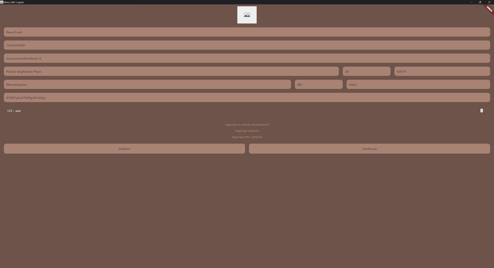

Screen saver dell'applicazione, volendo si potrebbe aggiungere una password per riaccedere. Quando l'app è inattiva per 5 minuti passa automaticamente allo screen saver

Lista dei prodotti con filtri avanzati per trovare in modo rapido i prodotti che cerchi
Stessa interfaccia per la lista delle fatture
Emissione delle fatture organizzata a sezioni, in modo da accedere alla sezione di riferimento in caso di modifica
Per i DDT l'interfaccia è praticamente uguale, ma con più opzioni all'interno della creazione
Schermata delle impostazioni per cambiare le informazioni relative alla propria azienda, aggiungere metodi di pagamento, categorie e sottocategorie prodotto
